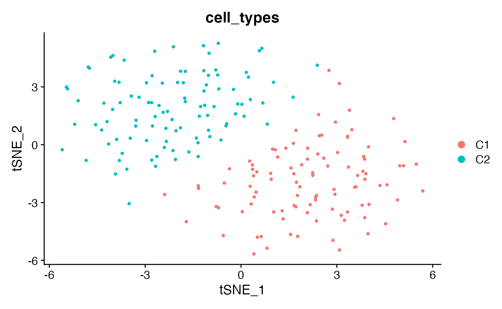
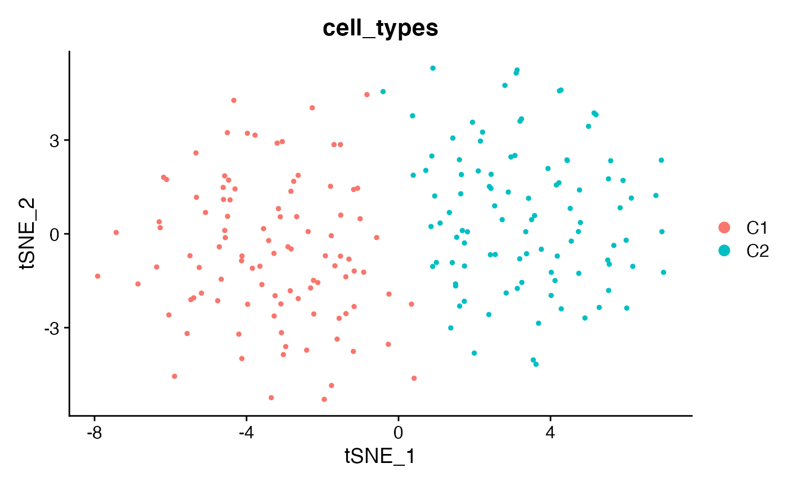
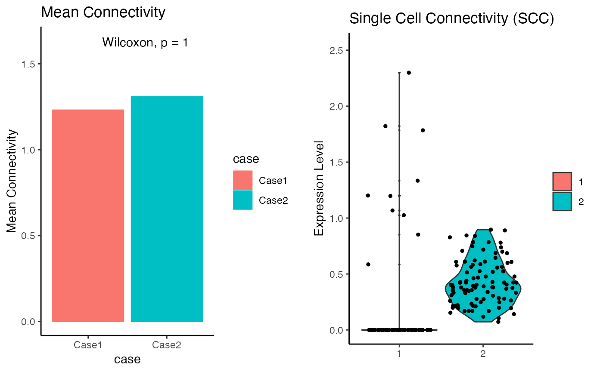

simulation_example2.Rmd
library(NICHES)
library(Seurat)
#> Attaching SeuratObject
library(ggplot2)
library(ggpubr)
library(cowplot)
#>
#> Attaching package: 'cowplot'
#> The following object is masked from 'package:ggpubr':
#>
#> get_legend
# Specify number of cells, marker genes, noisy genes
n_cell_per_type <- 100
n_marker_genes <- 50
n_noise_genes <- 5000
set.seed(34)#> [1] "Ligand 1's mean expression level of Cell type 1: 9.3"
#> [1] "Receptor 1's mean expression level of Cell type 2: 5.34"
#> [1] 5052
#> [1] 200
#> Centering and scaling data matrix
#> PC_ 1
#> Positive: Lrp1, G4, G33, G23, G13, G19, G48, G42, G36, G40
#> G32, G25, G35, G47, G5, G31, G43, G14, G2, G46
#> G26, G29, G15, G8, G39, G22, G50, G34, G37, G18
#> Negative: N2314, A2m, N3399, N4032, N2445, N288, N578, N2229, N2430, N1368
#> N3587, N1695, N2780, N4625, N282, N926, N655, N4682, N102, N2497
#> N4626, N2510, N915, N4070, N4825, N903, N105, N1925, N2890, N3226
#> PC_ 2
#> Positive: N4922, N4972, N4748, N318, N3989, N2754, N4227, N1343, N1445, N4196
#> N2195, N4949, N1357, N2013, N2275, N1646, N4294, N1562, N705, N4647
#> N2428, N687, N181, N1287, N2204, N2684, N2431, N2015, N1180, N3305
#> Negative: N2858, N3279, N4946, N3893, N4626, N3858, N911, N1422, N596, N2628
#> N2354, N2523, N4260, N2862, N2391, N3900, N375, N1488, N1227, N3980
#> N209, N1934, N1610, N1093, N4348, N3554, N2749, N3362, N4207, N1961
#> PC_ 3
#> Positive: N2805, N3155, N2193, N2016, N449, N3922, N225, N2224, N3320, N3072
#> N1157, N4006, N4792, N1168, N2732, N1757, N2990, N3767, N4367, N1400
#> N2398, N4289, N868, N2650, N917, N3557, N2336, N2680, N1322, N3239
#> Negative: N711, N513, N2177, N2006, N3223, N3983, N2054, N2743, N446, N4972
#> N2894, N2263, N1502, N3055, N544, N1063, N597, N2457, N407, N3783
#> N124, N727, N4858, N3246, N375, N2530, N3893, N4671, N3452, N2327
#> PC_ 4
#> Positive: N1941, N3256, N4174, N181, N792, N1350, N2219, N2807, N4150, N1084
#> N4352, N4989, G37, N1186, N1566, N3266, N1515, N2771, N2888, N4099
#> N3409, N1771, N320, N4629, N3274, N3244, N2951, N914, N912, N2277
#> Negative: N3287, N3464, N4630, N579, N487, N1262, N3023, N4956, N389, N592
#> N2444, N4066, N1813, N1216, N3720, N3938, N1675, N37, N283, N4068
#> N3637, N2890, N249, N2056, N459, N850, N1204, N2925, N2004, N1163
#> PC_ 5
#> Positive: N4273, N1260, N1121, N794, N4573, N1431, N3194, N2274, N123, N4585
#> N302, N2242, N369, N4930, N730, N1895, N1806, N1299, N3085, N4759
#> N3250, N3208, N2333, N2720, N1419, N4093, N2342, N1474, N2970, N3174
#> Negative: N4339, N994, N2244, N861, N4687, N2193, N3255, N2412, N2184, N3379
#> N3738, N557, N4038, N892, N2885, N1791, N2446, N3098, N4076, N4782
#> N1820, N4260, N1014, N605, N48, N2759, N2361, N3960, N976, N1159
Seurat::DimPlot(seu_obj_sim1,reduction = "tsne",group.by = "cell_types")
SCC_sim1 <- NICHES::RunNICHES(object = seu_obj_sim1,LR.database = "fantom5",species = "mouse",assay = "RNA",
meta.data.to.map = c('cell_types','orig.ident'), min.cells.per.ident = 0,
min.cells.per.gene = 0,
CellToCell = T,CellToSystem = F,SystemToCell = F,
CellToCellSpatial =F,CellToNeighborhood = F,NeighborhoodToCell =F)
#>
#> Subsetting to populations with greater than 0 cells
#>
#> Subsetting to genes expressed in greater than 0 cells
#>
#> 200 distinct cells from 2 celltypes to be analyzed
#>
#> Limiting ground truth to genes within dataset
#>
#> Mapping against 1 ground truth signaling mechanisms
#>
#> For sampling purposes, please make sure that the active Identity of the input seurat object corresponds to cell types
#>
#> 400 Cell-To-Cell edges computed, sampling 4 distinct VectorTypes, out of 4 total possible
Seurat::Idents(SCC_sim1[[1]]) <- SCC_sim1[[1]]@meta.data$VectorType
SCC_sim1_sub <- subset(SCC_sim1[[1]],idents = "C1-C2")
SCC_sim1_sub@meta.data$case <- "1"
############
## Case 2 ##
############
# all the cells of Cell_type 1 (c1) express ligand 1 (l1)
# c2 don't express l1
mean_expression_l1_c1 <- 10
l1 <- c(rnbinom(n = n_cell_per_type, mu = mean_expression_l1_c1,size=20),rep(0,n_cell_per_type))
print(paste0("Ligand 1's mean expression level of Cell type 1: ",mean(l1[1:n_cell_per_type])))
#> [1] "Ligand 1's mean expression level of Cell type 1: 9.87"
# Other settings (r1,markers,noise) remain the same as in case 1
count_matrix2 <- rbind(l1,r1,markers,noise)
nrow(count_matrix2)
#> [1] 5052
ncol(count_matrix2)
#> [1] 200
rownames(count_matrix2) <- c("A2m","Lrp1",paste0("G",1:n_marker_genes),paste0("N",1:n_noise_genes))
colnames(count_matrix2) <- paste0("Cell",1:(n_cell_per_type*2))
# Preprocessing
# Construct the seurat input
cell_type_annotations <- as.data.frame(c(rep("C1",n_cell_per_type),rep("C2",n_cell_per_type)))
rownames(cell_type_annotations) <- colnames(count_matrix2)
colnames(cell_type_annotations) <- c("cell_types")
seu_obj_sim2 <- Seurat::CreateSeuratObject(counts = count_matrix2,meta.data=cell_type_annotations)
Seurat::Idents(seu_obj_sim2) <- "cell_types"
seu_obj_sim2 <- Seurat::NormalizeData(seu_obj_sim2)
seu_obj_sim2 <- Seurat::FindVariableFeatures(seu_obj_sim2,selection.method="disp")
seu_obj_sim2 <- Seurat::ScaleData(seu_obj_sim2)
#> Centering and scaling data matrix
seu_obj_sim2 <- Seurat::RunPCA(seu_obj_sim2,npcs = 30)
#> PC_ 1
#> Positive: A2m, N2314, N3399, N4032, N2445, N288, N578, N2229, N2430, N1368
#> N3587, N2780, N1695, N4625, N282, N926, N655, N4682, N102, N2497
#> N4626, N2510, N915, N4070, N105, N903, N3226, N4825, N1925, N2890
#> Negative: Lrp1, G4, G33, G23, G13, G19, G42, G36, G48, G40
#> G32, G25, G35, G47, G5, G43, G31, G14, G2, G46
#> G29, G15, G26, G8, G39, G22, G50, G37, G34, G18
#> PC_ 2
#> Positive: N2858, N3279, N4946, N3893, N4626, N3858, N911, N1422, N596, N2628
#> N2354, N2523, N2862, N4260, N375, N3900, N2391, N1488, N3980, N1227
#> N3277, N3554, N1934, N1610, N209, N4207, N4348, N2749, N3362, N1093
#> Negative: N4922, N4972, N318, N4748, N3989, N2754, N4227, N1445, N1343, N2013
#> N2195, N1357, N4949, N4196, N1646, N2275, N4294, N1562, N705, N4647
#> N181, N2428, N687, N2204, N2684, N1287, N2431, N3305, N2015, N1859
#> PC_ 3
#> Positive: N711, N513, N2006, N3223, N2177, N2054, N3983, N2743, N4972, N446
#> N1502, N2263, N2894, N544, N597, N1063, N3452, N2457, N727, N3055
#> N1515, N3893, N407, N375, N3783, N2109, N4858, N3244, N2412, N124
#> Negative: N2805, N3155, N2016, N3922, N1157, N449, N2193, N225, N1757, N2224
#> N3320, N3072, N4792, N2732, N3767, N4006, N1168, N1400, N4289, N2650
#> N2680, N4367, N962, N3239, N1322, N770, N2655, N868, N3051, N2398
#> PC_ 4
#> Positive: N3287, N3464, N4630, N579, N487, N592, N1813, N389, N4066, N1262
#> N4956, N3023, N2444, N3720, N1216, N1675, N3938, N850, N1163, N4068
#> N3637, N2925, N459, N3222, N283, N37, N2890, N2056, N1971, N3024
#> Negative: N1941, N3256, N4174, N4150, N181, N2219, N2807, N1350, N792, G37
#> N4352, N1084, N4989, N1186, N1566, N2888, N3409, N2771, N914, N4099
#> N6, N2990, N320, N3266, N1771, N4629, N2951, N3274, N3881, N1724
#> PC_ 5
#> Positive: N4273, N1260, N3194, N794, N4573, N2274, N1121, N1431, N4585, N123
#> N369, N302, N730, N1895, N3085, N1299, N1806, N2242, N3250, N1419
#> N2720, N4759, N4930, N2333, N2342, N3174, N3208, N2970, N4093, N4704
#> Negative: N4339, N2244, N994, N2193, N861, N4687, N3255, N2412, N3738, N2184
#> N892, N3379, N557, N4038, N2885, N605, N1820, N1014, N1791, N4076
#> N2446, N4782, N3098, N4260, N3960, N2838, N48, N2759, N2470, N1450
seu_obj_sim2 <- Seurat::RunTSNE(seu_obj_sim2,dims= 1:30,seed.use = 34)
Seurat::DimPlot(seu_obj_sim2,reduction = "tsne",group.by = "cell_types")
SCC_sim2 <- NICHES::RunNICHES(object = seu_obj_sim2,LR.database = "fantom5",species = "mouse",assay = "RNA",
meta.data.to.map = c('cell_types','orig.ident'),min.cells.per.ident = 0,
min.cells.per.gene = 0,
CellToCell = T,CellToSystem = F,SystemToCell = F,
CellToCellSpatial =F,CellToNeighborhood = F,NeighborhoodToCell =F)
#>
#> Subsetting to populations with greater than 0 cells
#>
#> Subsetting to genes expressed in greater than 0 cells
#>
#> 200 distinct cells from 2 celltypes to be analyzed
#>
#> Limiting ground truth to genes within dataset
#>
#> Mapping against 1 ground truth signaling mechanisms
#>
#> For sampling purposes, please make sure that the active Identity of the input seurat object corresponds to cell types
#>
#> 400 Cell-To-Cell edges computed, sampling 4 distinct VectorTypes, out of 4 total possible
Seurat::Idents(SCC_sim2[[1]]) <- SCC_sim2[[1]]@meta.data$VectorType
SCC_sim2_sub <- subset(SCC_sim2[[1]],idents = "C1-C2")
SCC_sim2_sub@meta.data$case <- "2"
# Testing
SCC_combo <- merge(SCC_sim1_sub,SCC_sim2_sub)
#> Warning in CheckDuplicateCellNames(object.list = objects): Some cell names are
#> duplicated across objects provided. Renaming to enforce unique cell names.
Seurat::Idents(SCC_combo) <- SCC_combo@meta.data$case
wilcox.test(x=SCC_combo@assays$CellToCell@data[1,Seurat::Idents(SCC_combo)=="1"],
y=SCC_combo@assays$CellToCell@data[1,Seurat::Idents(SCC_combo)=="2"])
#>
#> Wilcoxon rank sum test with continuity correction
#>
#> data: SCC_combo@assays$CellToCell@data[1, Seurat::Idents(SCC_combo) == "1"] and SCC_combo@assays$CellToCell@data[1, Seurat::Idents(SCC_combo) == "2"]
#> W = 1065, p-value < 2.2e-16
#> alternative hypothesis: true location shift is not equal to 0
# Compare mean values and plot
avg.exp.1 <- data.frame(AverageExpression(seu_obj_sim1))
avg.exp.2 <- data.frame(AverageExpression(seu_obj_sim2))
avg.exp.1$gene <- rownames(avg.exp.1)
avg.exp.2$gene <- rownames(avg.exp.2)
avg.exp.1 <- avg.exp.1[c('A2m','Lrp1'),]
avg.exp.2 <- avg.exp.2[c('A2m','Lrp1'),]
avg.exp.1$case <- 'Case1'
avg.exp.2$case <- 'Case2'
avg.exp <- rbind(avg.exp.1,avg.exp.2)
p7 <- ggplot(avg.exp,aes(x=case,y=RNA.C1,color = case,fill=case)) +
geom_bar(stat = 'identity')+
ggtitle('Mean Connectivity')+
ylab('Mean Connectivity')+
ylim(0,1.25*max(avg.exp$RNA.C1))+ stat_compare_means(label.x = 1.4,label.y = 1.6)+theme_classic()
p8 <- VlnPlot(SCC_combo,'A2m-Lrp1')+ylim(0,1.1*max(SCC_combo@assays$CellToCell@data))+
stat_compare_means(label.x = 1.3,label.y = 3)+
ggtitle('Single Cell Connectivity (SCC)')+xlab(NULL)+theme_classic()
#> Scale for 'y' is already present. Adding another scale for 'y', which will
#> replace the existing scale.
temp2 <- plot_grid(p7,p8)
#> Warning: Removed 43 rows containing non-finite values (stat_ydensity).
#> Warning: Removed 43 rows containing non-finite values (stat_compare_means).
#> Warning: Removed 43 rows containing missing values (geom_point).
#> Warning: Removed 1 rows containing missing values (geom_text).
ggpubr::ggarrange(temp2,nrow=1)